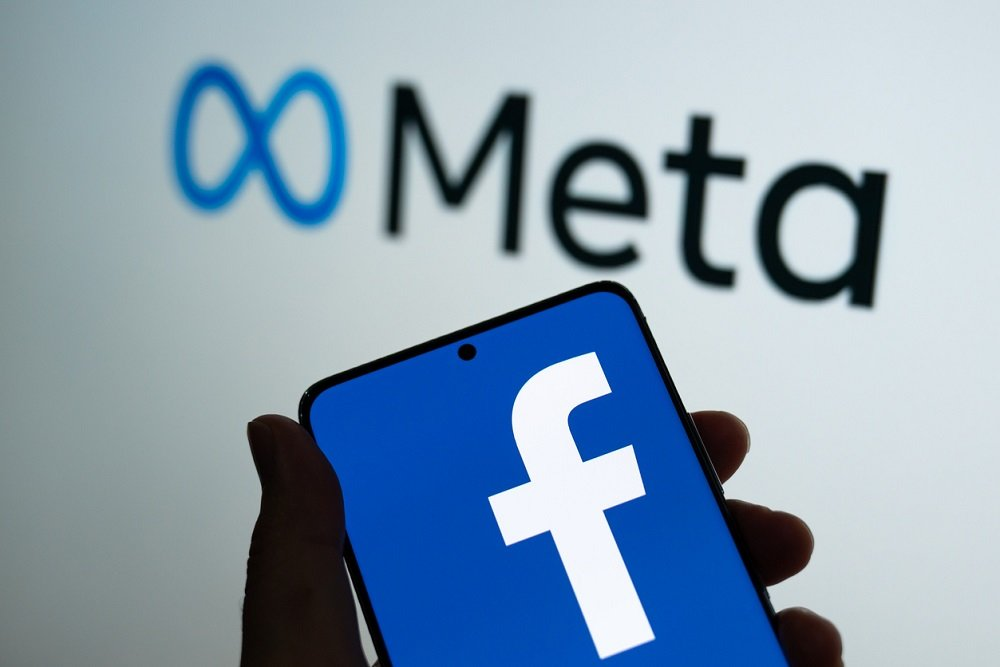

Facebook es una red social fundada por Mark Zuckerberg en 2004, que se ha convertido en una de las plataformas de redes sociales más populares y utilizadas en todo el mundo, ya que permite crear una comunidad para que los usuarios interactúen y compartan contenido como publicaciones, fotos, videos y enlaces. Los usuarios también pueden seguir páginas de interés, unirse a grupos de discusión y participar en eventos. La plataforma ofrece una amplia gama de funciones interactivas, como dar «Me gusta» a publicaciones, comentar, compartir contenido y enviar mensajes directos a otros usuarios. Facebook ha evolucionado para incluir una variedad de servicios relacionados, como Facebook Messenger, una aplicación de mensajería instantánea; Facebook Marketplace, una plataforma para comprar y vender productos; Facebook Ads y Facebook Live, una función que permite a los usuarios transmitir videos en vivo a su audiencia. Facebook sirve para varios propósitos, tales como la conexión y comunicación entre personas y grupos; para compartir contenido personal y comercial, así como interacción social entre comunidades y marcas. Una de las funciones más importantes es la de marketing y publicidad. Esta red social ayuda a conectarse con amigos, familiares y conocidos, tanto a nivel local como global. Puedes compartir actualizaciones de estado, fotos, videos y enlaces para mantener a las personas al tanto de tu vida y comunicarte con ellos a través de comentarios, mensajes privados o videollamadas. Se comparten distintos contenidos como fotos y videos, y también contenido de interés, como noticias, artículos, memes y videos divertidos. Te permite descubrir contenido nuevo y relevante en función de tus intereses y conexiones. Es una gran plataforma para la interacción social en línea, además de que permite crear eventos y grupos temáticos, e incluso interactuar a un nivel más profundo con el Metaverso.
Regresar al Menú